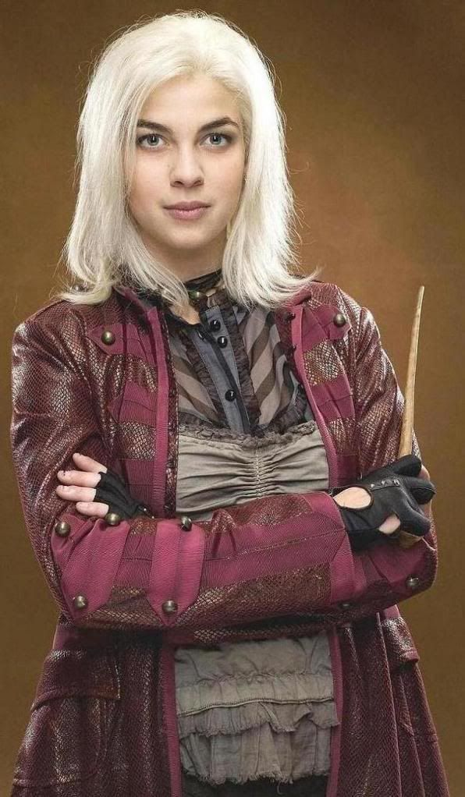
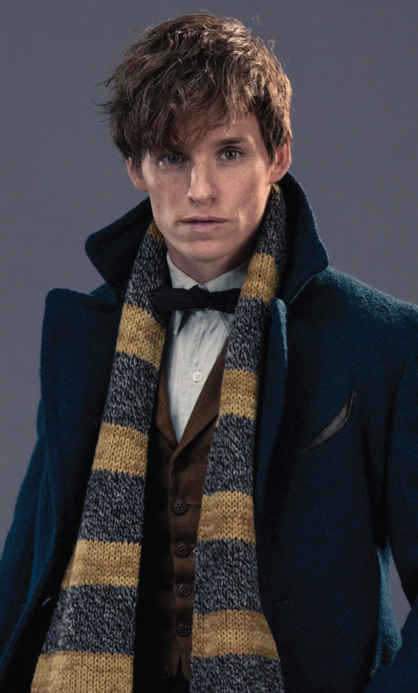
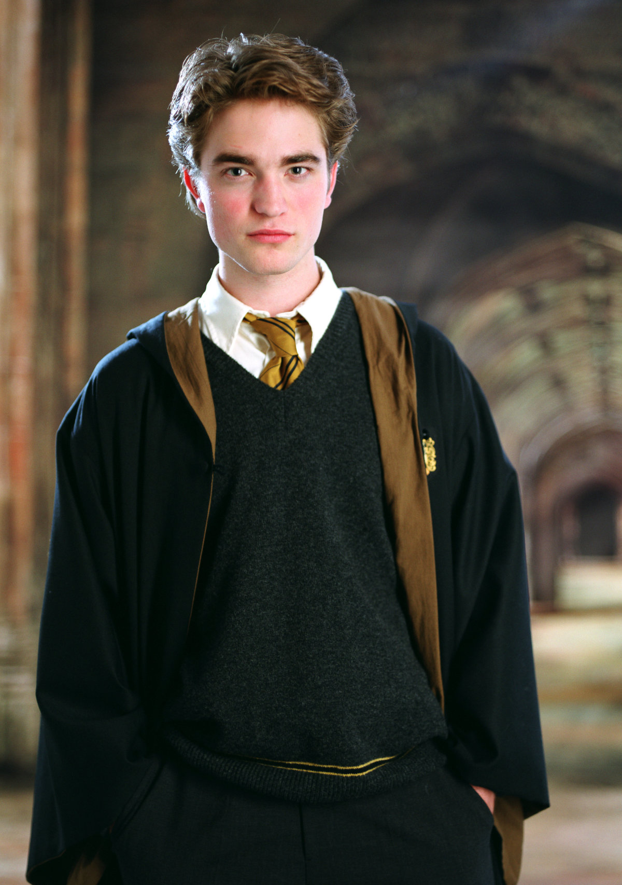

Hufflepuff


Read more
Nymphadora Tonks 1984-1991
Nymphadora Tonks was a metamorphmagus witch who married Remus Lupin and died during the Battle of Hogwarts. She was well known or being able to change her physical appearance (often her hair to bubble gum pink)

Read more
Newton Scammander 1908-1915
Newt Scamander was a famous Magizoologist and author of Fantastic Beasts and Where to Find Them. He became a respected expert in the field of Magizoology after writing the book.

Read more
Cedric Diggory 1989-1995
Cedric Diggory was a student of Hogwarts who was killed in his sixth year by Voldemort while competing in the Triwizard Tournament.
Hufflepuff is one of the four houses founded by Helga Hufflepuff. The traits associated with members of the Hufflepuff house:
- Dedication
- Hard work
- Fair play
- Patience
- Loyalty